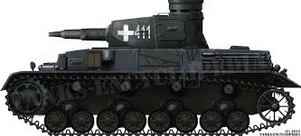
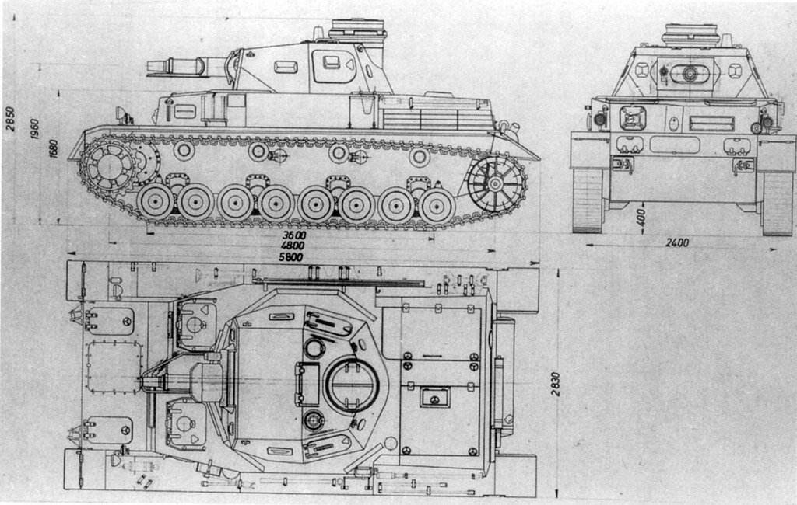
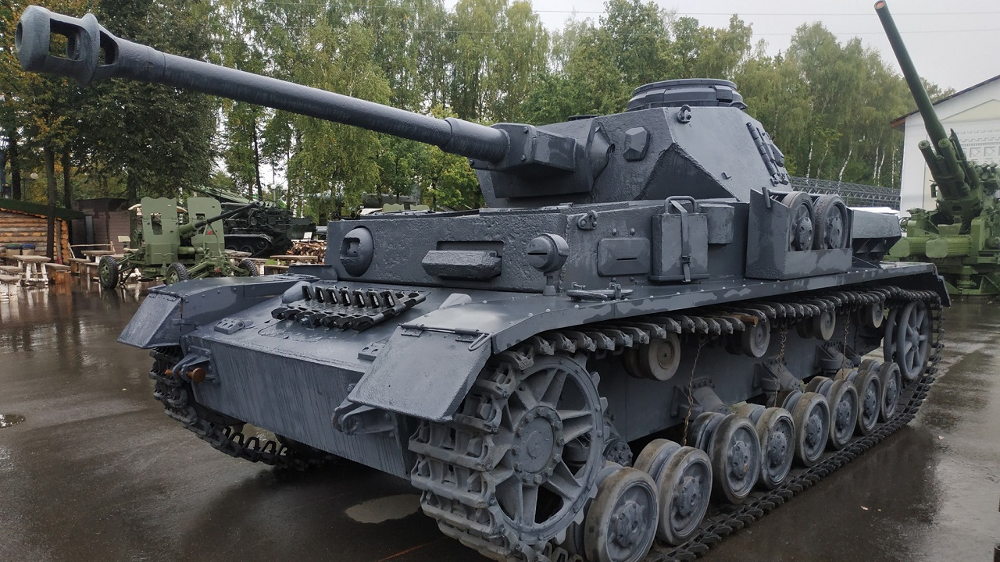
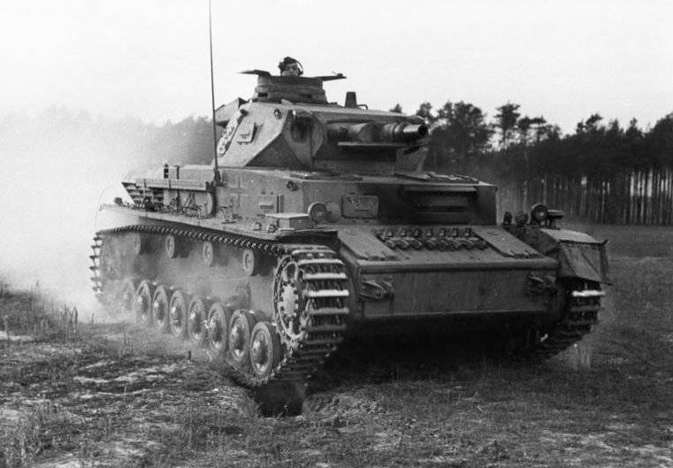

Panzerkampfwagen IV
История создания
Предпосылки разработки
Разработан в 1936 году фирмой Krupp как танк поддержки пехоты...
1934-1936
Первые прототипы
Прототип Ausf. A с короткоствольной 75-мм пушкой...

Конструктивные особенности
Ходовая часть
8 опорных катков с индивидуальной подвеской, переднее ведущее колесо, стальные гусеницы шириной 400 мм
Броня
Лоб корпуса: 80 мм
Борт: 30 мм
Башня: 50-100 мм

Башня
Двигатель
Общие
Масса:
25 тонн
Экипаж:
5 человек
Длина:
7.02 м
Ширина:
2.88 м
Вооружение
Основное:
75-мм KwK 40 L/48
Пулеметы:
2×7.92 мм MG 34
Боекомплект:
87 снарядов
Углы наводки:
-8°...+20°
1937
Ausf. A
Первая серийная версия
1939
Ausf. D
Усиление бронирования
1942
Ausf. F2
Новая длинноствольная пушка
1943
Ausf. G
Улучшенное охлаждение
1944
Ausf. H
Противокумулятивные экраны
1944
Ausf. J
Упрощенная конструкция
Боевое применение
8,500+
Выпущено единиц
1945
Год снятия с производства
Фотогалерея

Сохранившийся экземпляр

Боевые действия 1943